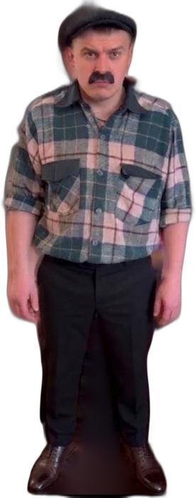

ПетровичPetrovich
Прожил в Новинке всю жизнь, поэтому его знает каждый житель, от продавщицы в «Шестёрочке» до батюшки в храме. Муж Лены и отец Раиса. Первым в семье заговорил про медведя «из ноября 2026» и просил сына не ходить в лес. Ездит на старой бежевой «шестёрке» и дружит со старым охотником дядь Сашей. Именно за него ты проходишь пролог и переживаешь ночи в пустом доме.He has lived in Novinka all his life, so everyone knows him, from the shop assistant to the priest. Lena’s husband and Rais’s father. He was the first in the family to talk about the bear “from November 2026” and asked his son not to go into the forest. He drives an old beige Lada and is friends with the old hunter, uncle Sasha. You play as him in the prologue and survive the nights in the empty house.